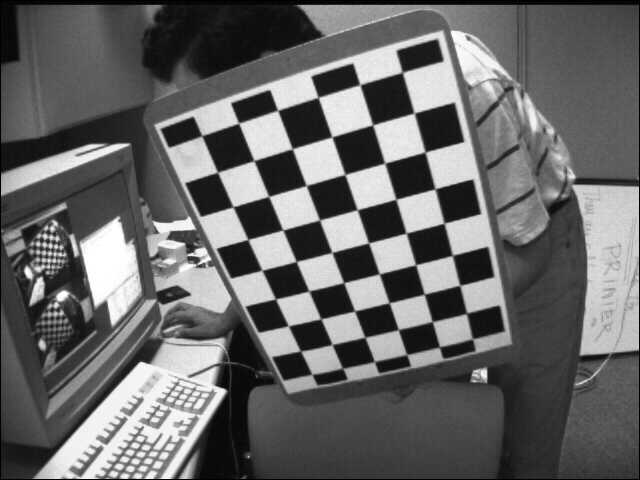
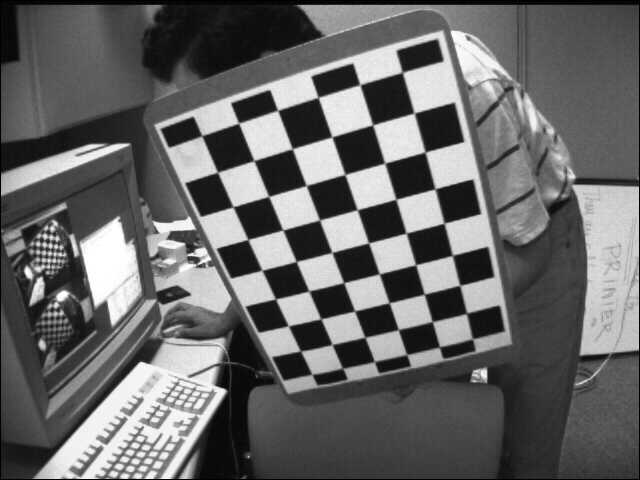
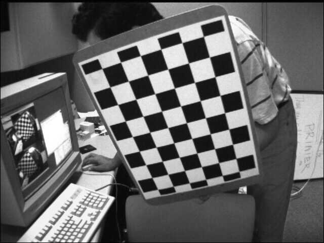

Data de realização dos experimentos: [25/06/2025]
Data de publicação do relatório: [02/07/2025]
A calibração de câmeras é um processo fundamental na área de visão computacional, especialmente em aplicações que envolvem reconstrução 3D, realidade aumentada, robótica e medições no espaço real. Por meio da calibração, é possível obter os parâmetros internos e externos de uma câmera, permitindo corrigir distorções ópticas e relacionar pontos do mundo real com suas projeções em imagens bidimensionais.
Neste experimento, exploramos os principais conceitos e técnicas de calibração de câmeras utilizando a biblioteca OpenCV. Foram utilizadas imagens fornecidas e também capturadas com webcams para estimar parâmetros como a matriz intrínseca, coeficientes de distorção, vetores de rotação e translação. Além disso, aplicamos métodos para corrigir distorções em imagens utilizando tanto a função cv2.undistort() quanto a técnica de remapeamento com cv2.remap().
O relatório apresenta todas as etapas realizadas, os resultados obtidos e uma análise crítica do processo, com o objetivo de demonstrar a importância e a aplicabilidade da calibração no tratamento de imagens digitais e no entendimento da geometria da formação de imagens.
Para iniciar a calibração com as imagens fornecidas (left01.jpg até left14.jpg), utilizamos o seguinte comando:
python3 L2_cal.pyO script realiza a detecção automática do tabuleiro de xadrez nas imagens e extrai os pontos de interesse para realizar a calibração da câmera.
Abaixo estão as imagens utilizadas para essa calibração:

A matriz da câmera, também conhecida como matriz intrínseca, reúne informações importantes como o foco da lente e o centro da imagem. Ela serve basicamente para transformar pontos do mundo real em coordenadas dentro da imagem, expressas em pixels.
A matriz de rotação e o vetor de translação, chamados de parâmetros extrínsecos, indicam onde a câmera está no espaço e para qual direção ela está voltada. Juntos, esses dois elementos ajudam a entender como a câmera se relaciona com o ambiente ao seu redor.
O vetor de distorção, por sua vez, corrige as imperfeições ópticas provocadas pela lente, como aquelas deformações que aparecem nas bordas da imagem.
Com esses parâmetros, conseguimos representar objetos do mundo real dentro da imagem de forma mais precisa, o que é essencial em aplicações como reconstrução 3D, medições reais, realidade aumentada e várias outras áreas da visão computacional.
Camera Matrix (K):
[[533.04084251 0. 341.99105249]
[ 0. 533.06631836 234.24931968]
[ 0. 0. 1. ]]
Vetor de Distorção (dist):
[-0.280583459 0.0303975660 0.00113380661 0.0000335420268 0.148375569]
Vetores de Rotação (rvecs):
(0) [0.09938428 0.2769208 1.55844602]
(1) [0.70142995 0.15653853 0.16198773]
(2) [ 0.04971804 -0.60067778 -0.18373359]
(3) [-0.10508862 0.3199036 0.31447873]
(4) [-0.34849292 -0.06837808 -1.20056146]
(5) [0.06243801 0.45029205 0.10740232]
(6) [ 0.49751925 0.12039045 -0.29636763]
(7) [-0.37696537 0.0689496 -0.01940626]
(8) [-0.35546604 0.24061581 0.20940337]
(9) [-0.47598668 0.08949178 -0.22581819]
(10) [ 0.19392527 -0.41948722 -0.19433804]
(11) [ 0.48153814 -0.17285583 -1.40710715]
Vetores de Translação (tvecs):
(0) [ 3.84145792 -2.78644439 11.27415855]
(1) [-1.56443198 -2.69691745 8.88861539]
(2) [-2.16177668 -3.47415382 10.67080794]
(3) [-3.71464462 -4.26801726 17.11089621]
(4) [-2.49858196 0.82984783 11.26063171]
(5) [ 2.22006922 -3.17401317 15.51563791]
(6) [-3.3962865 -2.37552093 12.49440015]
(7) [-2.94551359 -2.9830229 12.7771738 ]
(8) [-1.82660633 -3.36787448 13.6228933 ]
(9) [-2.31474045 -2.53609795 12.33315813]
(10) [-2.66931635 -3.16427902 10.5163429 ]
(11) [-3.49204822 1.64660314 11.88377479]
Cada imagem resulta em um par (R, t) pois a posição e orientação do padrão de calibração em relação à câmera variam a cada captura. Os vetores de rotação rvecs definem como girar o sistema de coordenadas do mundo para coincidir com o da câmera, enquanto os vetores de translação tvecs definem o deslocamento do centro do mundo para o centro da câmera.
Capturamos 10 imagens com o padrão de tabuleiro usando o script L2_chess.py e salvamos como octavio_0.jpg até octavio_9.jpg. Em seguida, rodamos o script L2_cal.py novamente:
python3 L2_cal.py
K = [[fx, s, cx],
[ 0, fy, cy],
[ 0, 0, 1]]
Camera Matrix:
[[690.99775005 0. 326.35954872]
[ 0. 691.37622728 203.37919888]
[ 0. 0. 1. ]]
Distorção:
[ 0.0470948937 -0.245211726 -0.00335561757 0.00100625411 1.15922740]
Focal Length fx, fy: 690.9978, 691.3762
Aspect Ratio (fx/fy): 0.9995
Skew: 0.0
Ponto Principal (cx, cy): 326.3595, 203.3792
Vetores de Rotação (rvecs):
(0) [ 0.02489939 0.22767208 -1.53202746]
(1) [-0.35829515 -0.67513783 -1.0316498 ]
(2) [-0.13002514 0.40766323 -0.90908867]
(3) [-0.16270363 -0.16604403 -1.55959384]
(4) [-0.88111096 -0.85141056 -1.16925651]
(5) [-0.16062441 -0.14799006 -0.01789264]
(6) [-0.36584744 -0.19960311 -1.3571223 ]
(7) [ 0.03482004 -0.14107024 -0.01725682]
(8) [-0.01792279 -0.42354873 -1.48917471]
(9) [-0.66091549 -0.74963436 -1.23655451]
Vetores de Translação (tvecs):
(0) [-3.49527422 2.59910272 14.82937161]
(1) [-3.99876452 0.41880873 12.97760866]
(2) [-2.65499376 0.65720976 18.76401934]
(3) [-3.30527622 2.695904 12.66298867]
(4) [-4.00115995 1.27380013 11.89045456]
(5) [-1.80577508 -2.77839376 15.14597432]
(6) [-4.53628545 2.55966726 13.01597206]
(7) [-2.34312523 -2.60938394 14.40123652]
(8) [-3.36652757 2.82514656 14.14408717]
(9) [-3.45734269 1.25190094 11.63516773]
Esses parâmetros descrevem as propriedades ópticas da câmera utilizada (incluindo focal length, ponto principal e distorção da lente). Cada par de vetores de rotação e translação representa a pose da câmera (posição e orientação) no momento em que cada imagem foi capturada.
Para cada imagem é obtido um vetor de rotação (R) e um vetor de translação (t), pois cada imagem representa uma nova posição e orientação da câmera em relação ao padrão de calibração.
Note que os valores obtidos pelas fotos tiradas em sala de aula deram um valor diferente dos parâmetros do item “A”. Isso se dá ao fato de as fotos utilizadas no item “A” serem fornecidas previamente para utilizarmos como exemplo e, possivelmente, terem sido tiradas com uma câmera de modelo e características diferentes.
O que nos faz concluir que os valores obtidos no item “B” são mais confiáveis e assertivos que os valores obtidos no item “A”.
Foram feitas novas capturas com outra câmera, nomeadas de octavio_outra_cam_1.jpg até octavio_outra_cam_9.jpg:
Camera Matrix:
[[587.54961922 0. 307.52930761]
[ 0. 590.29849377 252.31682355]
[ 0. 0. 1. ]]
Distorção:
[-0.42134011 0.53293747 -0.00327312 0.00380574 -0.9820142]
Vetores de Rotação (rvecs):
(0) [-0.17458815 -0.23725543 0.31847988]
(1) [-0.80948122 -0.47871373 -0.93524594]
(2) [ 0.07447703 0.21678553 -0.74249676]
(3) [-1.03815439 0.10593325 0.1099041 ]
(4) [-0.68375867 0.08025622 0.10668694]
(5) [-0.58056336 -0.32804901 -1.09134378]
(6) [-0.48059051 0.96703365 1.59997908]
(7) [0.19019213 0.60180391 0.41386766]
(8) [-0.10862962 0.38465694 1.58179607]
(9) [-0.64611799 -0.00035764 0.08847470]
Vetores de Translação (tvecs):
(0) [ 0.30946672 -6.36326251 21.04266291]
(1) [-3.0329745 -1.62054559 10.80698942]
(2) [-5.75585257 -1.08705721 17.312657 ]
(3) [-1.40814958 -2.05531664 15.23571018]
(4) [-1.88358196 -3.41133087 15.08741113]
(5) [-3.96300313 -1.17635142 11.07758678]
(6) [ 4.08755951 -2.46502593 10.77522621]
(7) [-3.01414156 -4.72032468 13.88106464]
(8) [ 3.52770913 -3.06460034 10.0646003 ]
(9) [-1.50187006 -3.77586624 14.80931457]
Essa calibração foi realizada com uma câmera diferente da usada nos testes anteriores. A matriz K apresenta uma distância focal levemente inferior, e a distorção radial é significativamente mais acentuada (valores maiores em k1 e k3). A presença de translações positivas e negativas nas poses mostra variações mais intensas na posição da câmera em relação ao padrão.
A segunda câmera apresentou parâmetros diferentes, com foco ligeiramente menor e centro óptico diferente, refletindo sua construção distinta.
Foram utilizadas imagens coloridas tiradas com a câmera já calibrada (fotos_item_d_0.jpg a fotos_item_d_3.jpg).
cv2.undistort(): Corrige diretamente com os parâmetros K e dist.cv2.initUndistortRectifyMap() e cv2.remap(): técnica mais flexível, ideal para vídeos ou sequência de imagens.Abaixo mostramos as imagens originais ao lado das versões corrigidas:

import cv2 as cv
import numpy as np
# Matriz da câmera
camera_matrix = np.array([[690.99775005, 0, 326.35954872],
[ 0, 691.37622728, 203.37919888],
[ 0, 0, 1]], dtype=np.float32)
# Coeficientes de distorção
dist_coeffs = np.array([4.70948937e-02, -2.45211726e-01, -3.35561757e-03, 1.00625411e-03,
1.15922740e+00
], dtype=np.float32)
#Pegando a imagem distorcida
img = cv.imread('fotos_item_d_0.jpg')
h, w = img.shape[:2]
newcameramtx, roi = cv.getOptimalNewCameraMatrix(camera_matrix, dist_coeffs, (w,h), 1, (w,h))
# undistort
mapx, mapy = cv.initUndistortRectifyMap(camera_matrix, dist_coeffs, None, newcameramtx, (w,h), 5)
dst = cv.remap(img, mapx, mapy, cv.INTER_LINEAR)
# crop the image
x, y, w, h = roi
dst = dst[y:y+h, x:x+w]
cv.imwrite('calibresult.png', dst)
cv.waitKey(0)
cv.destroyAllWindows()
import cv2 as cv
import numpy as np
# Matriz da câmera
camera_matrix = np.array([[690.99775005, 0, 326.35954872],
[ 0, 691.37622728, 203.37919888],
[ 0, 0, 1]], dtype=np.float32)
# Coeficientes de distorção
dist_coeffs = np.array([4.70948937e-02, -2.45211726e-01, -3.35561757e-03, 1.00625411e-03,
1.15922740e+00
], dtype=np.float32)
#Pegando a imagem distorcida
img = cv.imread('fotos_item_d_3.jpg')
h, w = img.shape[:2]
newcameramtx, roi = cv.getOptimalNewCameraMatrix(camera_matrix, dist_coeffs, (w,h), 1, (w,h))
# undistort
dst = cv.undistort(img, camera_matrix, dist_coeffs, None, newcameramtx)
# crop the image
x, y, w, h = roi
dst = dst[y:y+h, x:x+w]
cv.imwrite('calibresult_item3_Undistort.png', dst)
cv.waitKey(0)
cv.destroyAllWindows()
As imagens corrigidas com undistort e remap mostram melhorias significativas, especialmente nas bordas, onde a distorção radial era mais perceptível. As linhas verticais e horizontais que apareciam curvas na imagem original foram retificadas após a aplicação dos métodos de correção.
As atividades experimentais foram divididas em quatro etapas principais, conforme o roteiro do Laboratório 2 da disciplina ESZA019 – Visão Computacional. As etapas foram realizadas em ambiente Linux com Python 3 e a biblioteca OpenCV.
Inicialmente, foram utilizadas 14 imagens do padrão de tabuleiro de xadrez (de left01.jpg a left14.jpg), previamente fornecidas pela equipe docente. Executamos o script L2_cal.py, responsável por identificar os cantos internos do tabuleiro, associar coordenadas reais (em milímetros) a cada ponto e calcular os parâmetros de calibração da câmera (matriz K, vetor de distorção, vetores de rotação e translação).
Capturamos 10 imagens do mesmo padrão de tabuleiro utilizando nossa webcam, por meio do script L2_chess.py. As imagens foram salvas com nomes octavio_0.jpg até octavio_9.jpg. Posteriormente, rodamos novamente o script L2_cal.py com essas imagens para obter os parâmetros de calibração da nossa câmera. Também foram calculados os valores derivados como distância focal, ponto principal e relação de aspecto.
Repetimos o mesmo processo da Parte 2B utilizando uma câmera diferente, registrando novas imagens nomeadas de octavio_outra_cam_1.jpg até octavio_outra_cam_9.jpg. Executamos o script L2_cal.py com essas imagens e obtivemos os novos parâmetros de calibração. A comparação entre os três conjuntos de parâmetros (Partes A, B e C) permitiu analisar as diferenças entre os dispositivos.
Com a câmera calibrada, capturamos quatro novas imagens coloridas do tabuleiro (fotos_item_d_0.jpg até fotos_item_d_3.jpg). Em seguida, utilizamos dois métodos para corrigir a distorção das imagens:
L2_und.py, que aplica a função cv2.undistort() com os parâmetros de calibração;L2_rema.py, que realiza a correção por meio de remapeamento com cv2.initUndistortRectifyMap() e cv2.remap().
As imagens corrigidas foram salvas com os nomes calibresult_itemX_Undistort.png e calibresult_itemX_Remap.png, com X variando de 0 a 3. A comparação lado a lado com as imagens originais permitiu observar os efeitos visuais da correção.
O processo de calibração de câmeras executado neste laboratório demonstrou, na prática, como obter os parâmetros intrínsecos e extrínsecos de diferentes dispositivos de captura de imagem. As três calibrações realizadas — utilizando imagens fornecidas (Parte 2A), imagens capturadas com a webcam (Parte 2B) e com outra câmera (Parte 2C) — permitiram comparar as diferenças entre equipamentos, bem como avaliar a qualidade da correção de distorção (Parte 2D).
Os parâmetros obtidos entre as câmeras natualmente variam devido a diferença de construção de cada uma, o que é visto em todas as distorções resultadas em parâmetros diferentes.
Com base nas calibrações realizadas, foi possível observar a influência dos parâmetros intrínsecos e extrínsecos de diferentes câmeras sobre a qualidade da correção de distorção e representação geométrica da cena. A comparação entre os resultados obtidos mostrou que cada dispositivo possui características ópticas próprias, o que exige uma calibração individualizada para aplicações que demandam precisão, como reconstrução 3D, medições reais e visão computacional em tempo real.